专题04 数轴相关动点压轴题02（4种类型32道）

考点01 数轴动点变速运动问题
考点02 数轴动点往返运动问题
考点03 数轴动点多动点（三个及以上）运动问题
考点04 数轴动点线段运动问题

考点01 数轴动点变速运动问题
1．已知a、b为常数，且关于x、y的多项式 的值与
的值与 取值无关，其中a、b分别为点
取值无关，其中a、b分别为点 、点
、点 在数轴上表示的数，如图，动点E、F分别从A、B同时开始运动，点
在数轴上表示的数，如图，动点E、F分别从A、B同时开始运动，点 以每秒6个单位向左运动，点
以每秒6个单位向左运动，点 以每秒2个单位向右运动，设运动时间为
以每秒2个单位向右运动，设运动时间为 秒．
秒．
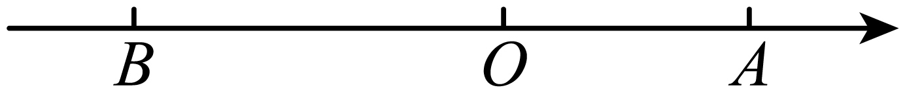
(1)求a、b的值；
(2)用表示点在数轴上对应的数为：__________，点在数轴上对应的数为：__________；
(3)当E、F相遇后，点继续保持向左运动，点在原地停留4秒后继续向右运动且速度变为原来的5倍．在整个运动过程中，当E、F之间的距离为120个单位时，求运动时间的值．
2．如图，点，分别为数轴正半轴上两点，对应的数分别为 ，
， ，
， ，知
，知 ，
，
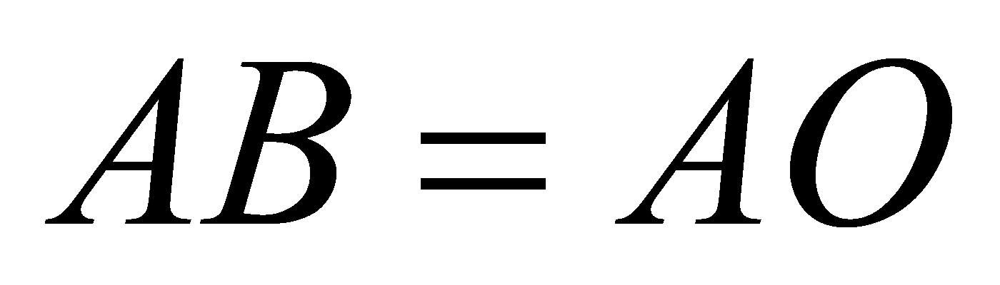
．若动点 从原点
从原点 出发，以1个单位长度/秒的速度向右匀速运动，动点
出发，以1个单位长度/秒的速度向右匀速运动，动点 从点出发，以
从点出发，以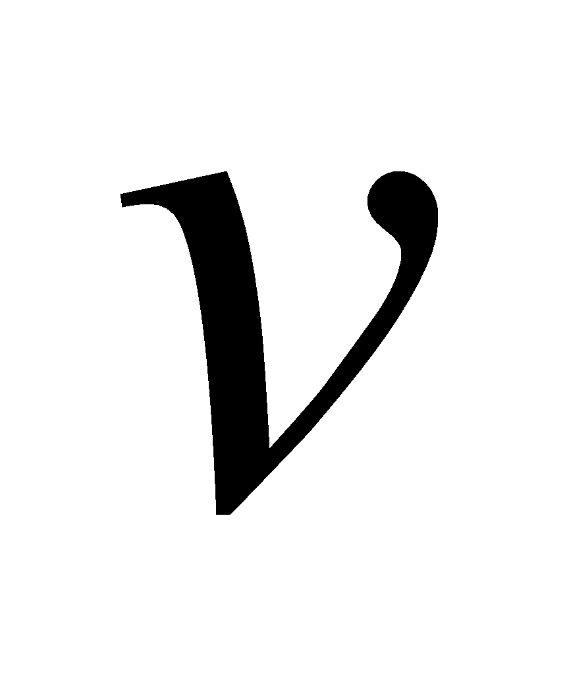
个单位长度/秒的速度向左匀速运动．
(1)点表示的数为_____，点表示的数为_____；（用含的式子表示）
(2)若经过3秒时，
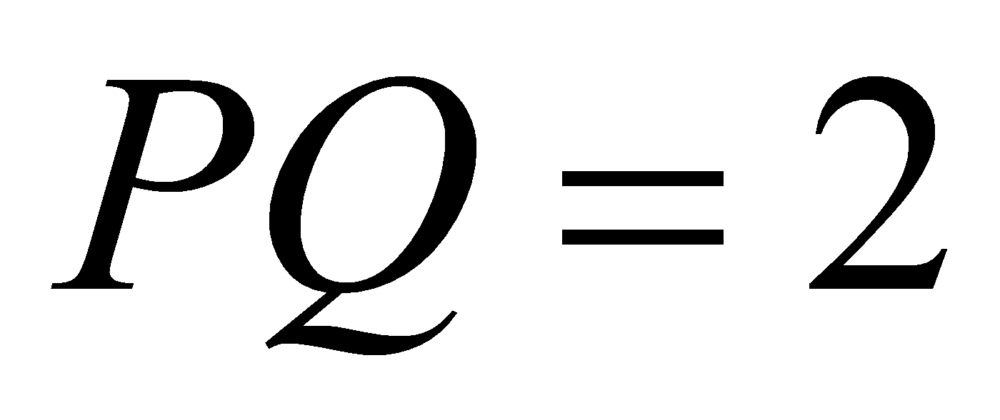
，求的值；(3)若
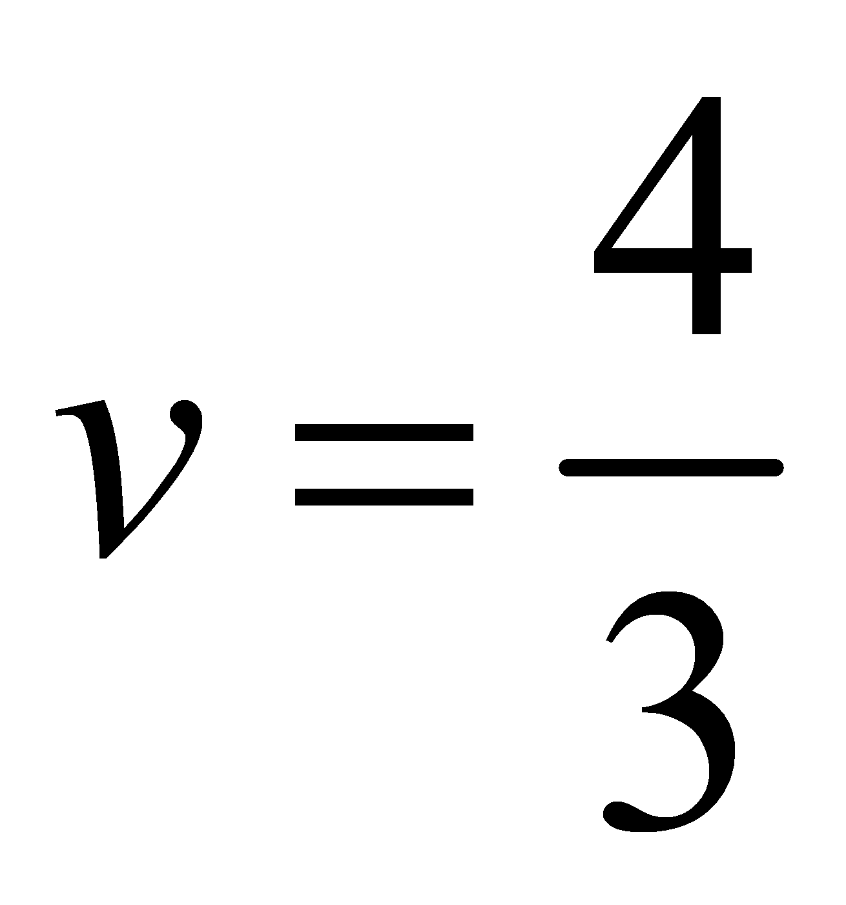
，现将，两点之间变为点的“变速区”，规定为：点从点运动到点期间速度变为原来的两倍，从点到点期间速度变为原来的3倍，之后立刻恢复原速，动点从原点出发，仍以1个单位长度/秒的速度向右匀速运动．请问，是否存在符合条件的，使，两点到点的距离相等？若存在，请直接写出的值；若不存在，请说明理由．3．我们知道：如果A 、B两点在数轴上对应的数分别为 、
、
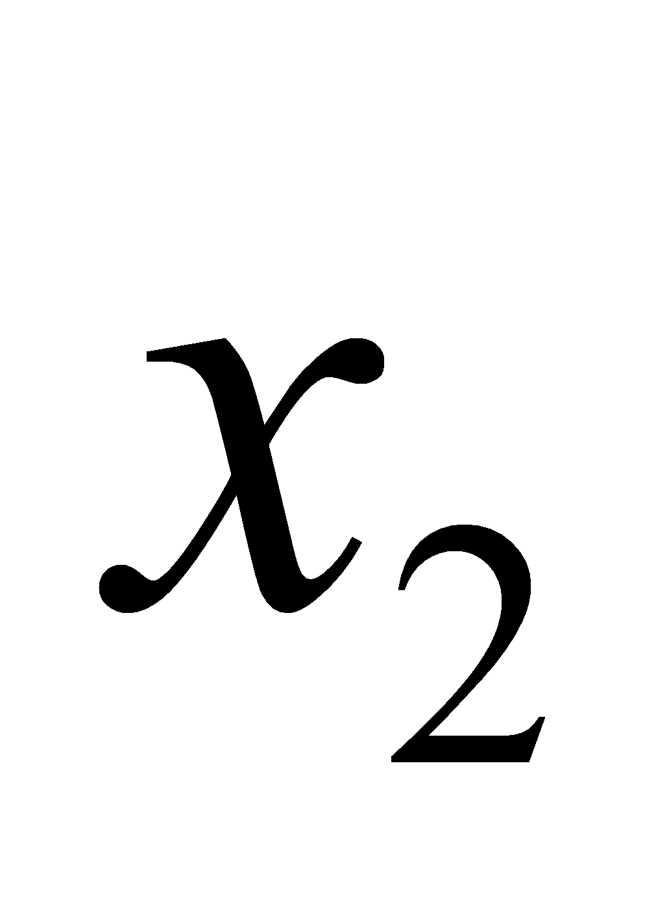
，C为线段 的中点，则点C在数轴上对应的数x可以表示为
的中点，则点C在数轴上对应的数x可以表示为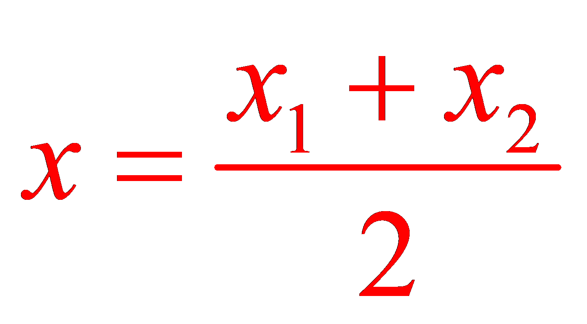
，已知M、N两个点对应的数分别为 和2．
和2．
(1)如图1，两个点同时出发沿着数轴运动，点M向左运动，点N向右运动，M、N的速度分别每秒4个单位长度和2个单位长度，若t秒后它们之间的距离为15个单位长度，求t的值；
(2)如图2，两个点出发沿着数轴运动，点M比点N晚出发1秒，点M向右运动，点N向左运动，M、N的速度分别每秒1个单位长度和2个单位长度，求点N出发几秒后“ ”为
”为 的中点；
的中点；
(3)如图3，三个定点P 、Q、H在数轴上对应的数分别为 、8和4，M、N两个点同时出发沿着数轴运动，点M向左运动，点N向右运动，速度分别每秒1个单位长度和2个单位长度．当M到达点P时返回，N到达点Q时返回，直到M、N相遇时停止运动，且 M返回时速度变为每秒2个单位长度，N返回时速度变为每秒1个单位长度．在M、N出发的同时，动点K也从点P出发沿着数轴以4个单位每秒的速度向右运动，到H点时停止运动，求M、N从开始出发到M、N相遇的整个运动过程中，M、N、K其中一个点分别为另外两个点为端点的线段中点时对应的时间t（写出计算过程）．
、8和4，M、N两个点同时出发沿着数轴运动，点M向左运动，点N向右运动，速度分别每秒1个单位长度和2个单位长度．当M到达点P时返回，N到达点Q时返回，直到M、N相遇时停止运动，且 M返回时速度变为每秒2个单位长度，N返回时速度变为每秒1个单位长度．在M、N出发的同时，动点K也从点P出发沿着数轴以4个单位每秒的速度向右运动，到H点时停止运动，求M、N从开始出发到M、N相遇的整个运动过程中，M、N、K其中一个点分别为另外两个点为端点的线段中点时对应的时间t（写出计算过程）．
4．若数轴上存在两动点，当第一次相遇后，速度都变为原来的两倍，第二次相遇后又都能恢复到原来的速度，则称这条数轴为魔幻数轴．
如图，已知一魔幻数轴上有，，三点，其中，对应的数分别为 ，
， ，
， 为47个单位长度，，分别从，两点同时出发，沿数轴正方向同向而行，的速度为3个单位／秒，的速度为1个单位／秒，设运动时间为秒，到达点后以当时的速度立即返回（掉头时间不计），当回到点时，、同时停止运动．
为47个单位长度，，分别从，两点同时出发，沿数轴正方向同向而行，的速度为3个单位／秒，的速度为1个单位／秒，设运动时间为秒，到达点后以当时的速度立即返回（掉头时间不计），当回到点时，、同时停止运动．
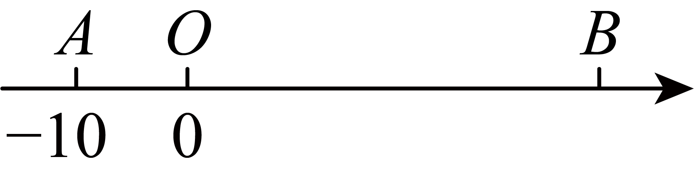
(1)点对应的数为______，出发______秒后追上（即第一次相遇）；
(2)当到达点立即返回后第二次与相遇时， ______，相遇点在数轴上表示的数是______；
______，相遇点在数轴上表示的数是______；
(3)，运动过程中是否存在某段时间内 为定值？若能，求出该定值并写出对应的的取值范围，若不能，请说明理由．
为定值？若能，求出该定值并写出对应的的取值范围，若不能，请说明理由．
5．如图，数轴上点为原点，点表示 ，点表示，点表示8．动点，同时出发，点从点出发，沿数轴正方向运动至点，出发时速度为每秒1个单位长度，到点后速度变为原来的2倍；点从点出发，沿数轴负方向运动至点，出发时速度为每秒2个单位长度，到点后速度变为原来的一半．设运动时间为秒
，点表示，点表示8．动点，同时出发，点从点出发，沿数轴正方向运动至点，出发时速度为每秒1个单位长度，到点后速度变为原来的2倍；点从点出发，沿数轴负方向运动至点，出发时速度为每秒2个单位长度，到点后速度变为原来的一半．设运动时间为秒
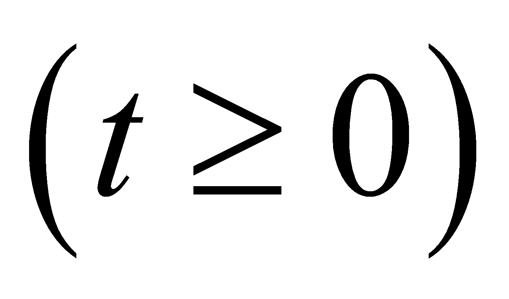
．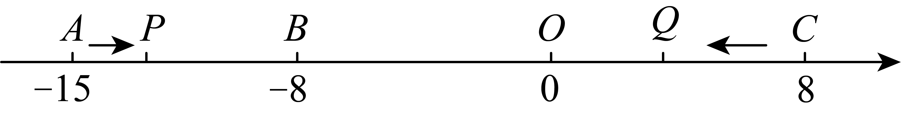
(1)点从点运动至点时，的值为___________秒；
(2)当 秒时，点在数轴上表示的数是___________；当点在线段上运动时，它在数轴上表示的数是___________；（用含的代数式表示，无需写出的取值范围）
秒时，点在数轴上表示的数是___________；当点在线段上运动时，它在数轴上表示的数是___________；（用含的代数式表示，无需写出的取值范围）
(3)当 两点相遇时，相遇点
两点相遇时，相遇点 所表示的数是___________；
所表示的数是___________；
(4)当线段 与
与 的长度相等时，的值为___________．
的长度相等时，的值为___________．
6．已知数轴上有A、B、C三个点，分别表示有理数 、9、20，动点P从点A出发，以每秒2个单位长度的速度向右移动．设移动时间为t秒，试回答以下问题：
、9、20，动点P从点A出发，以每秒2个单位长度的速度向右移动．设移动时间为t秒，试回答以下问题：
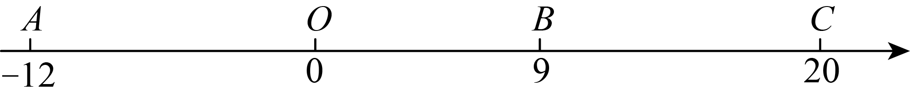
(1)经过几秒后，点P到点A、点C的距离相等？此时点P表示的数是多少？
(2)如图：

当动点P从点A出发以2单位/秒的速度向右运动，同时点Q从点C出发，以1个单位/秒速度向左运动．O、B两点之间为“变速区”，规则为从点O运动到点B期间速度变为原来的 ，之后立刻恢复原速，从点B运动到点O期间速度变为原来的3倍，之后立刻恢复原速．是否存在符合条件的t，使P、Q两点到点B的距离相等？若存在，请直接写出t的值；若不存在，请说明理由．
，之后立刻恢复原速，从点B运动到点O期间速度变为原来的3倍，之后立刻恢复原速．是否存在符合条件的t，使P、Q两点到点B的距离相等？若存在，请直接写出t的值；若不存在，请说明理由．
7．如图，点O是数轴的原点，数轴上的点A对应的数是 ，点B对应的数是．点C对应的数是8；数轴上有两个动点M，N，点M从点A出发，以每秒4个单位的速度沿数轴向点C匀速运动，到达点C后立即返回，速度变为每秒3个单位沿数轴向点A匀速运动，点N从点B出发沿数轴以每秒1个单位的速度向点C匀速运动；点N与点M同时出发，设点M，N的运动时间为x秒，当
，点B对应的数是．点C对应的数是8；数轴上有两个动点M，N，点M从点A出发，以每秒4个单位的速度沿数轴向点C匀速运动，到达点C后立即返回，速度变为每秒3个单位沿数轴向点A匀速运动，点N从点B出发沿数轴以每秒1个单位的速度向点C匀速运动；点N与点M同时出发，设点M，N的运动时间为x秒，当 秒时，点M，N同时停止运动．
秒时，点M，N同时停止运动．

(1)求A，C两点之间的距离 ；
；
(2)求M，N两点相遇时对应的x的值；
(3)在全部运动过程中，当点M，N，O中的任意一点为另外两个点连接成的线段的中点时，直接写出所有满足条件的x的值．
8．如图，数轴上A，B，O两点表示的数分别为 ，13，0．
，13，0．
数轴体现了数形结合的数学思想，若数轴上点A，B表示的数分别为a，b，则A、B两点之间的距离表示为 ．数轴上数x表示的点到表示数a的点与表示数b的点的距离之和记为
．数轴上数x表示的点到表示数a的点与表示数b的点的距离之和记为
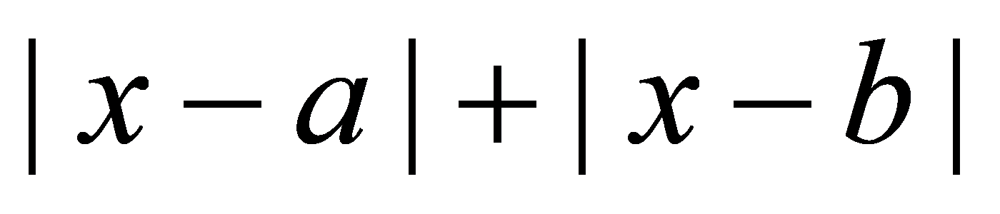
．同理，数轴上数x表示的点到表示数a的点与表示数b的点的距离之差记为 ．
．
(1)若 ，则
，则 ______．
______． 的最小值为______．
的最小值为______． 的最小值为______．
的最小值为______．
(2)若点P从点A出发，以每秒2个单位长度的速度沿数轴向右运动，运动时间为t，当动点P到点O与点B的距离之差等于点P到点A与点O距离之和的最小值时，求出t的值及此时点P表示的数．
(3)点C，D表示的数分别为，3，动点M从点A出发，以每秒2个单位长度的速度向右运动，当到达点B后立即速度减半返回A点；动点N从点B出发，以每秒1个单位长度的速度向左运动，当到达点A后停留 ，然后速度变为原来的两倍返回B点．当点A、B中某一点返回到达出发点时，两个点均停止运动，点M、N同时开始运动，经过多少秒时，点N到点C的距离等于点M到点D距离的两倍．
，然后速度变为原来的两倍返回B点．当点A、B中某一点返回到达出发点时，两个点均停止运动，点M、N同时开始运动，经过多少秒时，点N到点C的距离等于点M到点D距离的两倍．
考点02 数轴动点往返运动问题
9．已知数轴上两点A、B对应的数分别为、3，点P为数轴上一动点，其对应的数为x．
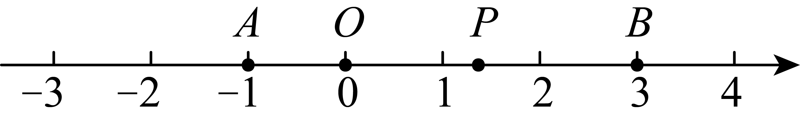
(1)若点P到点A，点B的距离相等，则点P对应的数是________；
(2)数轴上是否存在点P，使点P到点A、点B的距离之和为10？若存在，请直接写出x的值；若不存在，说明理由；
(3)点A、点B分别以每分钟2个单位长度和每分钟1个单位长度的速度向右运动，同时点P以每分钟6个单位长度的速度从O点向左运动．当点P遇到点A时，点P立即以原来的速度向右运动，当点P遇到点B时，立即以原来的速度向左运动，并不停地往返于点A与点B之间，求当点A与点B重合时，点P所经过的总路程是多少？
10．已知数轴上两点A、B对应的数分别为，3，点P为数轴上一动点，其对应的数为a．

(1)若点P到点A、点B的距离相等，求点P对应的数．
(2)数轴上是否存在一个点P，使点P到点A、点B的距离之和为8，若存在，求出a的值，若不存在，请说明理由．
(3)若点A以每分钟2个单位长度向左运动，点B以每分钟6个单位长度向左运动；
①当点P以每分钟1个单位长度从数轴上的数2开始向左运动，A、B、P三点同时出发，几分钟后P点到点A、点B的距离相等？
②当点P以每分钟8个单位长度从原点开始向左运动，当遇到点A时；点P立即以同样的速度向右运动，当遇到点B时，点P立即以同样的速度向左运动，并不停地往返于点A与点B之间，A、B、P三点同时出发，求点A与点B重合时，点P所运动的总路程是多少个单位长度？
11．“阳光向上，跑动青春”，为营造阳光运动的校园氛围，培养学生热爱体育、崇尚运动的健康观念和良好习惯，学校利用课间进行趣味跑操活动，其中有两名学生课间在操场上沿着直线进行折返跑，往返一次．将这条直线看成数轴，起点记为，折返点记为 ，主席台记为点，两位同学分别记为点，；若动点、从点同时出发向点运动，到达点后折返到点；
，主席台记为点，两位同学分别记为点，；若动点、从点同时出发向点运动，到达点后折返到点；
已知：数轴上点、对应的数分别为 、
、 ，且满足
，且满足
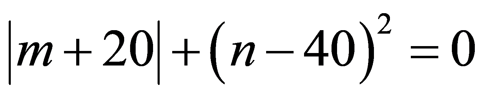
．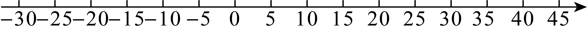
(1)求出、的值；
(2)设点在数轴上对应的数为，那么当为多少时能使得到的距离与到的距离之和为50？
(3)已知点的速度为3个单位长度/秒，点的速度为2个单位长度/秒，当动点到达点后，点开始改变速度，以个单位长度/秒继续折返跑，4秒后，、两点相距2个单位长度，求的值．
12．如图，在数轴上点A表示的数是8，若动点P从原点O出发，以1个单位/秒的速度向左运动，同时另一动点Q从点A出发，以2个单位/秒的速度在O，A之间往返运动，设运动的时间为t（秒）．
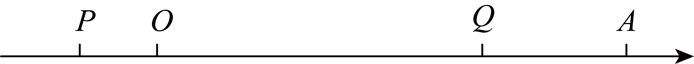
(1)当 时，求点Q到点P的距离；
时，求点Q到点P的距离；
(2)当点Q到点P的距离为7时，求运动的时间t（秒）；
(3)当P、Q开始运动时，又一动点M同时从点O出发，以3个单位/秒的速度先向右运动．当点M遇到点Q后立即返回，以同样的速度向点P运动，遇到点P后立即返回，又以同样的速度向点Q运动，如此往返，当点P、Q相距13个单位时，点M行驶的总路程为 个单位．
13．如图，数轴上线段 （单位长度），
（单位长度）， （单位长度），点A在数轴上表示的数是，点C在数轴上表示的数是14．
（单位长度），点A在数轴上表示的数是，点C在数轴上表示的数是14．
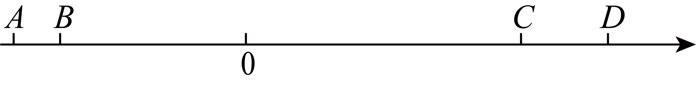
(1)若点P是数轴上一动点，当动点P到点A的距离与到点D的距离之和等于34时，则点P对应的数是 ；
(2)若点M从点A出发向右运动，速度为2个单位长度/秒，点N从点D出发向左运动，速度为4个单位长度/秒，点P从原点出发，速度为3个单位长度/秒．点M，N和P三点同时运动，点P先向右运动，遇到点N立即掉头向左运动，遇到点M再立即掉头向右运动，如此往返，当M，N两点相距12个单位长度时，点P立即停止运动，此时点P移动的路程为 个单位长度；
14．如图，数轴上有、、、四点，点是原点，

 ，
，
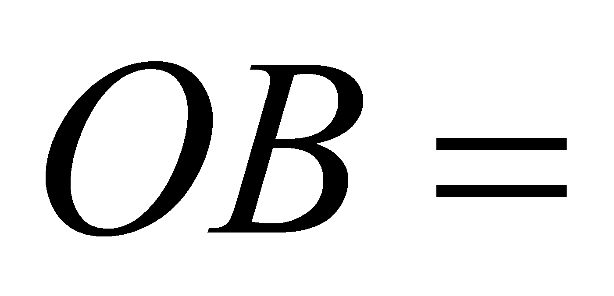
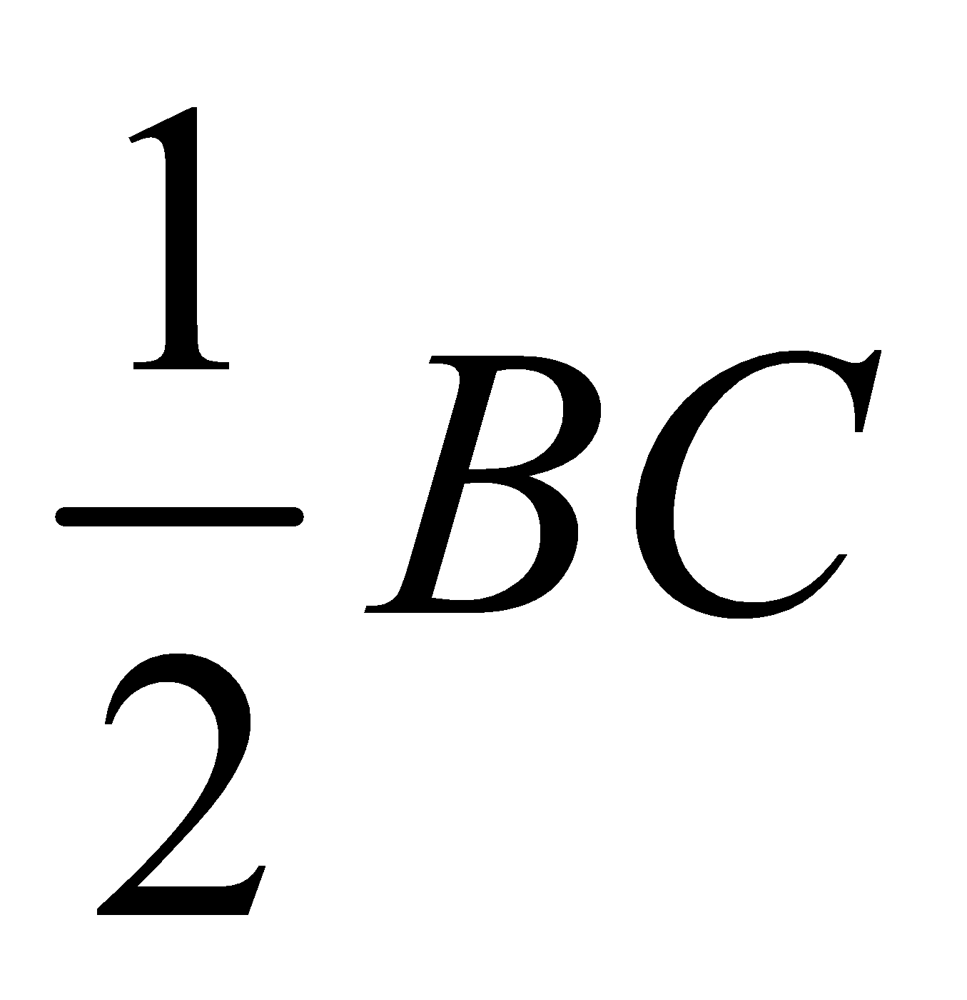
(1)写出数轴上点表示的数为 ．
(2)动点P、Q分别从A、C同时出发，点P以每秒6个单位长度的速度沿数轴向右匀速运动，点Q以每秒3个单位长度的速度沿数轴向左匀速运动，M为线段AP的中点，点N在线段CQ上，且CN=CQ．设运动时间为t(t>0)秒．
①直接写出数轴上点表示的数为 ，点表示的数为  用含的式子表示
用含的式子表示 ．
．
②求当是多少秒时，原点恰为线段 的中点．
的中点．
③若动点 从点出发，以每秒
从点出发，以每秒 个单位长度的速度沿数轴向右匀速运动，若、、三动点同时出发，当点遇到点后，立即返回以原速度向点运动，当点遇到点后，又立即返回以原速度向点运动，并不停地以原速度往返于点与点之间，当点与点重合时，点停止运动．问点从开始运动到停止运动，行驶的总路程是多少个单位长度？
个单位长度的速度沿数轴向右匀速运动，若、、三动点同时出发，当点遇到点后，立即返回以原速度向点运动，当点遇到点后，又立即返回以原速度向点运动，并不停地以原速度往返于点与点之间，当点与点重合时，点停止运动．问点从开始运动到停止运动，行驶的总路程是多少个单位长度？
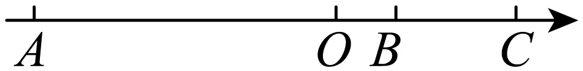
15．如图，已知数轴上点表示的数为 ，是数轴上在原点左侧的一点，且A，两点间的距离为
，是数轴上在原点左侧的一点，且A，两点间的距离为 ．动点从点出发，以每秒
．动点从点出发，以每秒 个单位长度的速度沿数轴向左匀速运动，设运动时间为秒
个单位长度的速度沿数轴向左匀速运动，设运动时间为秒 ．
．
(1)点运动到线段的中点时，它所表示的数是_____．
(2)动点从点出发，以每秒 个单位长度的速度沿数轴向左匀速运动．点在数轴上表示的数为
个单位长度的速度沿数轴向左匀速运动．点在数轴上表示的数为 ，动点从点出发，沿数轴向右匀速运动，动点，，同时出发．
，动点从点出发，沿数轴向右匀速运动，动点，，同时出发．

①当点运动多少秒时，点追上点？
②动点、运动到点时则立即返回以原速度向点运动，动点运动到点时又立即以原速度向点运动，点不停地以原速度往返于点与点之间．当动点运动到 秒时，动点、、三点同时停止运动，则点运动多少秒时，点与点间的距离为个单位长度?
秒时，动点、、三点同时停止运动，则点运动多少秒时，点与点间的距离为个单位长度?
16．已知数轴上两点，对应的数分别为，3，点为数轴上一动点，其对应的数为．

(1)若将数轴折叠，使得点与点重合，折叠点为，则点表示的数为_____，与重合的点为_____；
(2)数轴上是否存在点，使点到点、点的距离之和为6？若存在，请求出的值；若不存在，说明理由；
(3)点、点分别以2个单位长度/分、1个单位长度/分的速度向右运动，同时点以6个单位长度/分的速度从点向左运动．当遇到时，点立即以同样的速度向右运动，并不停地往返于点与点之间，求当点与点重合时，点所经过的总路程是多少？
考点03 数轴动点多动点（三个及以上）运动问题
17．预备知识：在数学中，点与点之间的距离用表示．如图，在数轴上点A表示数a，点B表示数b，点C表示数c，已知数b是最小的正整数，且a，c满足 ．
．
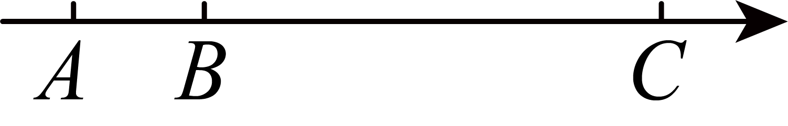
(1)填空：a＝ ，b＝ ，c＝ ．
(2)点A，B，C开始在数轴上运动，若点A以每秒1个单位长度的速度向左运动，同时，点B和点C分别以每秒m（ ）个单位长度和4个单位长度的速度向右运动．
）个单位长度和4个单位长度的速度向右运动．
①运动后，求A，B，C三点在数轴上所表示的数；
②若在此过程中， 的值为52，求m的值．
的值为52，求m的值．
(3)若在此数轴上有一动点Q，且点Q表示整数y，当 取最小值时，求符合条件的所有
取最小值时，求符合条件的所有 的和．
的和．
18．如图，点、都在数轴上，为原点，且，两点间的距离 ，A，B两点间的距离
，A，B两点间的距离 ．
．

(1)请直接写出点、表示的数，： ，： ．
(2)若点以每秒2个单位长度的速度，点以每秒1个单位长度的速度，同时向左运动，则运动几秒后，两点间的距离 ？
？
(3)我们定义：对于数轴上从左到右的三点，如果中间的点与它右边的点的距离恰好是中间的点与它左边的点的距离的3倍，则称中间点是其它两个点的“友好点”．比如，在数轴上点D、O、E分别表示的数为-3、0、9，这三点满足 ，则称点是点
，则称点是点 和点的“友好点”．
和点的“友好点”．
若点从点出发，以每秒6个单位长度的速度向左运动，点从点出发，以每秒3个单位长度的速度向左运动，点从点出发，以每秒3个单位长度的速度向右运动．三点同时出发，设运动时间为秒．在运动的过程中，当点是点和点的“友好点”时，点和点之间的距离是一个定值．请你求出这个定值．
19．如图，已知数轴上点A表示的数为4，点B表示的数为1，C是数轴上一点，C在原点左侧，且 ，动点P从点B出发，以每秒4个单位长度的速度沿数轴向左匀速运动，设运动时间为
，动点P从点B出发，以每秒4个单位长度的速度沿数轴向左匀速运动，设运动时间为 秒．
秒．
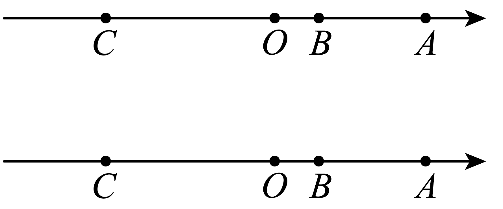
(1)数轴上点C表示的数为______，并用含 t的代数式表示点P所表示的数为______；
(2)设M是 的中点，N是
的中点，N是 的中点，点P在运动过程中，线段的长度是否发生变化？若变化，请说明理由；若不变，求线段的长度；
的中点，点P在运动过程中，线段的长度是否发生变化？若变化，请说明理由；若不变，求线段的长度；
(3)动点Q从点A出发，以每秒3个单位长度的速度沿数轴向左匀速运动，动点R从点C出发，以每秒1个单位长度沿数轴向左匀速运动，若P、Q、R三点同时出发，在运动过程中，P到R的距离、P到Q的距离，这两段距离何时相等，请求出此时t的值．
20．已知数轴上A，B，C三点对应的数分别为、3、5，点P为数轴上任意一点，其对应的数为．点A与点B之间的距离表示为，点B与点P之间的距离表示为 ，点A与点P之间的距离表示为，点C与点P之间的距离表示为．
，点A与点P之间的距离表示为，点C与点P之间的距离表示为．
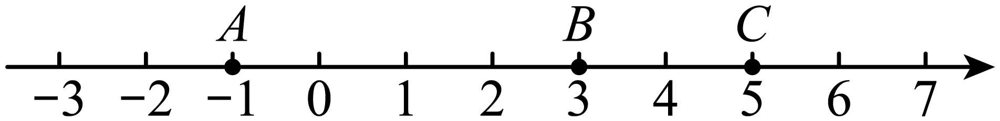
(1)若，则______；
(2)若 ，求x的值；
，求x的值；
(3)若点P从点C出发，以每秒3个单位的速度向右运动，点A以每秒1个单位的速度向左运动，点B以每秒2个单位的速度向右运动，三点同时出发．设运动时间为t秒，试判断： 的值是否会随着t的变化而变化？请说明理由．
的值是否会随着t的变化而变化？请说明理由．
21．已知数轴上A，B两点表示的数分别为a，b，AB表示线段的长度．对于线段和数轴上的点C，给出如下定义：
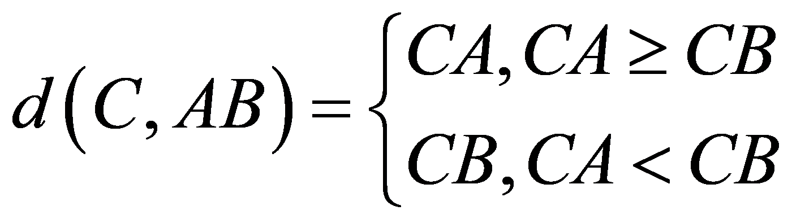
，此时，我们称 是点C和线段的极大距离．例如：数轴上A，B两点表示的数分别为，3，点C是原点，此时因为
是点C和线段的极大距离．例如：数轴上A，B两点表示的数分别为，3，点C是原点，此时因为 ，
，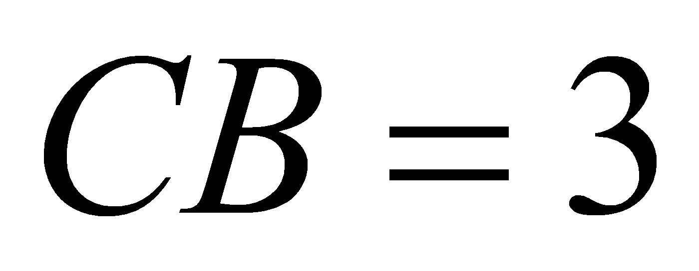
，且 ，所以
，所以 ．
．
(1)当数轴上A，B两点表示的数分别为，10，点C对应的数是1时， ______；
______；
(2)①当数轴上点A表示的数为，点C对应的数是1，
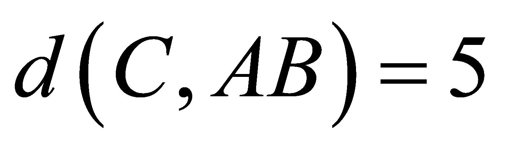
，点B对应的数是______；②当数轴上A，B两点表示的数分别为，10，点C是数轴上的动点，的最小值是______；
(3)已知数轴上A，B，C三点表示的数分别为，10，1．，C两点沿数轴以每秒2个单位长度向右运动，B点沿数轴以每秒4个单位长度向左运动，三点同时出发，运动时间为t，当最小时，求t的最大值和最小值．
22．如图，已知点 在数轴上表示的数为
在数轴上表示的数为 ，其中满足
，其中满足 ，点，点之间的距离记为．
，点，点之间的距离记为．
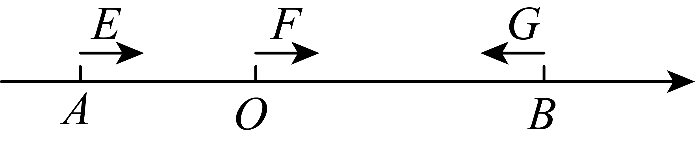
(1)点表示的数为______，点表示的数为______， ______；
______；
(2)动点从点出发，以每秒4个单位长度的速度沿数轴正方向匀速运动，动点从原点出发，以每秒3个单位长度的速度沿数轴正方向匀速运动，动点 从点出发，以每秒8个单位长度的速度先沿负方向匀速运动，到达原点后立即按每秒5个单位长度的速度返回，三点同时出发，设运动的时间为
从点出发，以每秒8个单位长度的速度先沿负方向匀速运动，到达原点后立即按每秒5个单位长度的速度返回，三点同时出发，设运动的时间为 ，其中
，其中
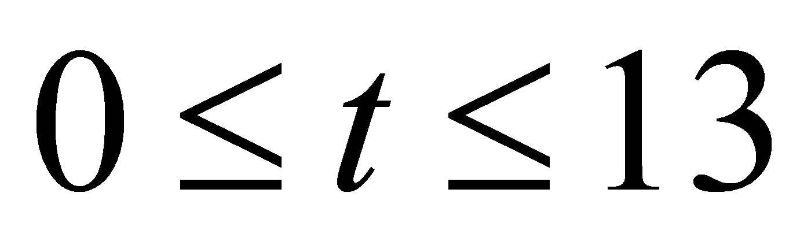
．①当 时，点在数轴上所表示数为______；
时，点在数轴上所表示数为______；
②当 时，点在数轴上所表示的数为______（用含t的代数式表示）；
时，点在数轴上所表示的数为______（用含t的代数式表示）；
③当点到点的距离是点到点距离的两倍时，求点在数轴上所表示的数．
23．如图，在数轴上点表示的数为 ，点表示的数为40，动点从点出发以每秒5个单位的速度沿正方向运动，动点从原点出发以每秒4个单位的速度沿正方向运动，动点从点出发以每秒8个单位的速度先沿负方向运动，到达原点后立即按原速返回，三点同时出发，当点回到点时，三点停止运动．
，点表示的数为40，动点从点出发以每秒5个单位的速度沿正方向运动，动点从原点出发以每秒4个单位的速度沿正方向运动，动点从点出发以每秒8个单位的速度先沿负方向运动，到达原点后立即按原速返回，三点同时出发，当点回到点时，三点停止运动．

(1)当运动时间为3秒时，点、点之间的距离是______，单位；当运动时间为______秒时，点与点相遇．
(2)当 个单位时，求三个点的运动时间．
个单位时，求三个点的运动时间．
(3)是否存在常数 ，使得
，使得 在某段时间内为定值？若存在，直接写出的值以及该定值；若不存在，请说明理由．
在某段时间内为定值？若存在，直接写出的值以及该定值；若不存在，请说明理由．
24．数轴上有A，B，C三点，分别表示有理数a，b，c且a，b满足
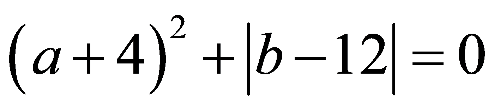
，点C到A，B两点距离相等．规定：两点间的距离可用这两点的字母表示，如点A与点C之间距离为．
(1) ，
， ，
， ；
；
(2)点P是数轴上一点，在数轴上对应数为，若 ， 求的值；
， 求的值；
(3)点A以3个单位/秒的速度向右运动，点B以1个单位/秒的速度向左运动，点C以2个单位/秒的速度向右运动，点D从原点出发以m个单位/秒的速度运动．A，B，C， D四点同时出发，设运动时间为t秒 ，在运动过程中总有 成立，求m值及点D运动方向．
成立，求m值及点D运动方向．
考点04 数轴动点线段运动问题
25．如图1，数轴上点、对应的数分别是、，且、满足
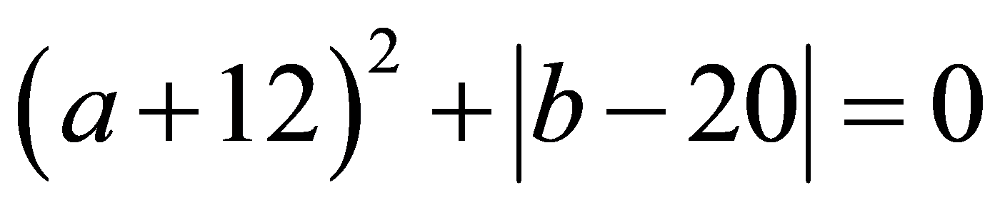
，现有一长度为2的玩具火车从原点出发（点与点重合），以每秒4个单位长度的速度向右运动，设运动时间为．
(1)直接写出______，______；
(2)在整个运动过程中，求
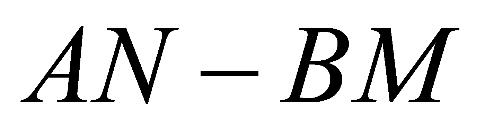
的值（用含的式子表示）；(3)如图2，在、处各放置一块挡板、，当点碰到挡板时，玩具火车以原来的速度返回，当点碰到挡板时，也立即以原来的速度返回．当
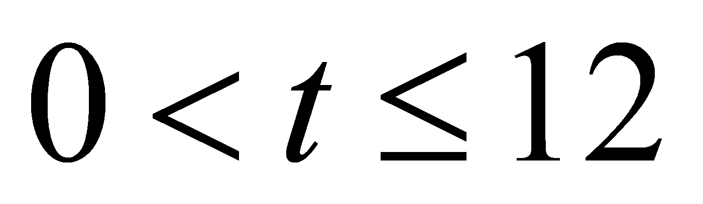
时，若，求的值．26．已知，两点在数轴上所表示的数分别为，，且，满足：
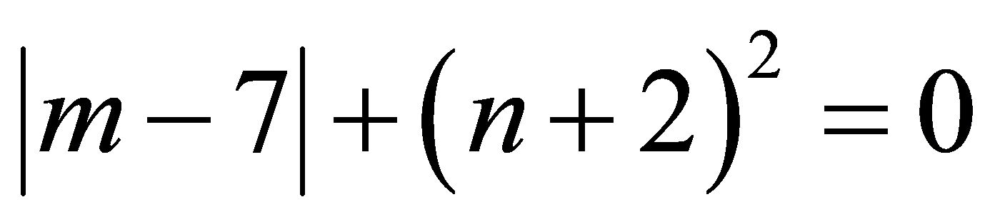
．
(1)求、的值；
(2)①情境：有一个玩具火车 如图
如图 所示，放置在数轴上，将火车沿数轴左右水平移动，当点移动到点时，点所对应的数为，当点移动到点时，点所对应的数为．则玩具火车的长为 个单位长度；
所示，放置在数轴上，将火车沿数轴左右水平移动，当点移动到点时，点所对应的数为，当点移动到点时，点所对应的数为．则玩具火车的长为 个单位长度；
②应用：如图所示，当火车匀速向右运动时，若火车完全经过点需要秒，则火车的速度为 个单位长度/秒．
(3)在（2）的条件下，当火车匀速向右运动，同时点和点从、出发，分别以每秒个单位长度和个单位长度的速度向左和向右运动，记火车运动后对应的位置为
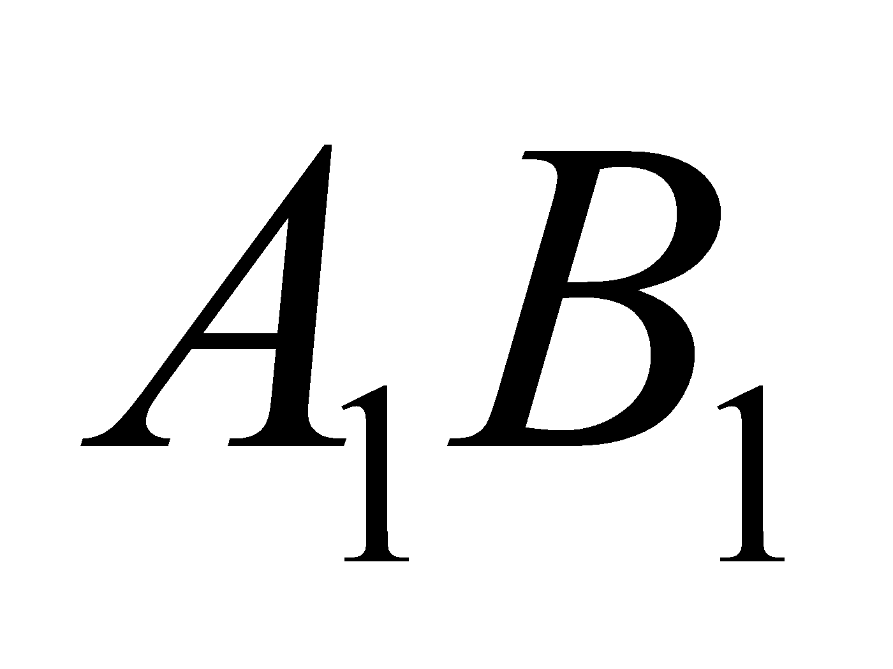
．是否存在常数使得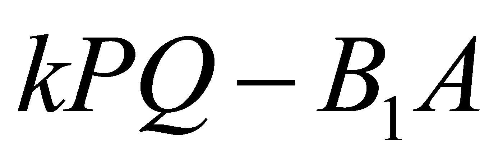
的值与它们的运动时间无关？若存在，请求出和这个定值：若不存在，请说明理由．27．已知，两点在数轴上所表示的数分别为，，且，满足
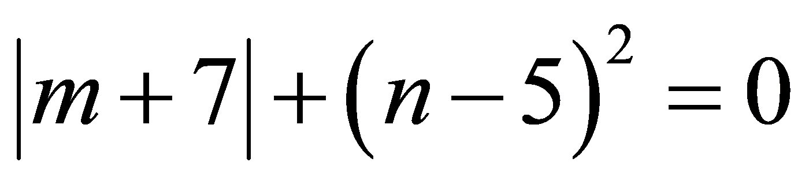
．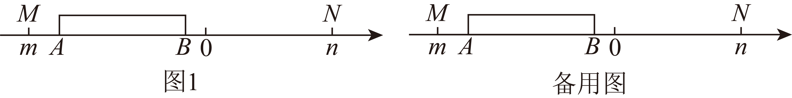
(1) _______，
_______， _______；
_______；
(2)有一个玩具火车如图1所示放置在数轴上，将火车沿数轴左右水平移动，当点移动到点时，点所对应的数为，当点移动到点时，点所对应的数为．
①玩具火车的长为_______个单位长度；
②将玩具火车沿数轴左右水平移动，当时，直接写出此时点所表示的数：_______；
③当玩具火车以每秒2个单位长度的速度向右运动，同时点和点从、出发，分别以每秒1个单位长度和3个单位长度的速度向右运动，记火车运动后对应的位置为 ，运动时间为秒，是否存在常数使得：
，运动时间为秒，是否存在常数使得： 的值与运动时间无关？若存在，请求出和这个定值；若不存在，请说明理由．
的值与运动时间无关？若存在，请求出和这个定值；若不存在，请说明理由．
28．已知 在数轴上所表示的数分别为
在数轴上所表示的数分别为 ，且
，且 ．
．
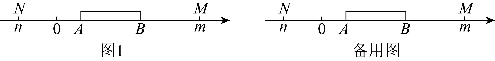
(1)___________，___________；
(2)①有一个玩具火车如图所示，放置在数轴上，将火车沿数轴左右水平移动，当点移动到点时，点所对应的数为，当点移动到点时，点所对应的数为．则玩具火车的长为___________个单位长度；
②如图所示，将第①题中的玩具火车沿数轴左右水平移动，当时，直接写出此时点所表示的数．
(3)在（）的条件下，当火车以每秒个单位长度的速度向右运动，同时点和点从出发，分别以每秒个单位长度和 个单位长度的速度向左和向右运动，记火车运动后对应的位置为，是否存在常数使得
个单位长度的速度向左和向右运动，记火车运动后对应的位置为，是否存在常数使得 的值与它们的运动时间无关？若存在，请求出和这个定值；若不存在，请说明理由．
的值与它们的运动时间无关？若存在，请求出和这个定值；若不存在，请说明理由．
29．已知M，N两点在数轴上所表示的数分别为m，n，且m，n满足 ．
．
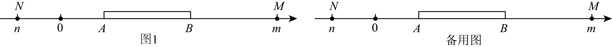
(1) _______；
_______；
(2)①有一个玩具火车，如图1所示，放置在数轴上，将火车沿数轴左右水平移动，当点A移动到点B时，点B所对应的数为m，当点B移动到点A时，点A所对应的数为n．则玩具火车的长为_______个单位长度；
②如图1所示，将第①题中的玩具火车沿数轴左右水平移动，当时，求此时点A所表示的数．
(3)在（2）的条件下，当火车以每秒2个单位长度的速度向右运动，同时点P和点Q从N、M出发，分别以每秒1个单位长度和3个单位长度的速度向左和向右运动，记火车运动后对应的位置为，若
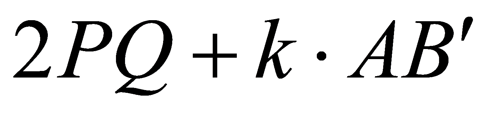
的值与它们的运动时间无关，请直接写出k值_______．30．（1）爱思考的小明将一个玩具火车放置在数轴上，如图1，他发现将火车在数轴上水平移动，当火车向右移动，点移动到点时，此时点 所对应的数为24；当火车向左移动，点移动到点时，此时点
所对应的数为24；当火车向左移动，点移动到点时，此时点 所对应的数为6．由此可得点处的数字是__________，玩具火车的长为__________个单位长度．
所对应的数为6．由此可得点处的数字是__________，玩具火车的长为__________个单位长度．
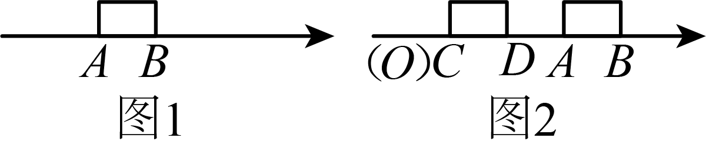
（2）如果火车正前方8个单位长度处有一个“隧道”，火车从（1）的起始位置出发到完全驶离“隧道”恰好用了秒，已知火车过“隧道”的速度为 个单位长度/秒，则知“隧道”的长为__________个单位长度．（自己在稿纸上画图分析，用含的代数式表示即可）
个单位长度/秒，则知“隧道”的长为__________个单位长度．（自己在稿纸上画图分析，用含的代数式表示即可）
（3）他惊喜地发现，“数轴”是学习数学的重要的工具，于是他继续深入探究：如图2，在（1）条件下的数轴上放置与大小相同的玩具火车，使原点与点重合，两列玩具火车分别从点和点同时在数轴上移动，已知火车的速度为5个单位长度/秒，火车的速度为2个单位长度/秒（两火车均向右移动），几秒后两火车的处与处相距3个单位长度？
31．如图1， 数轴上，从左到右依次有点A，点 C，点 D，点 B，其中点A，点B 表示的数分别为 和75， 点C 与点D 间的距离为40， 若点O 在点A和点B的正中间，则称点为的中点．
和75， 点C 与点D 间的距离为40， 若点O 在点A和点B的正中间，则称点为的中点．

(1)若点A，点D 间的距离为50， 点Q 为线段 的中点，则点Q 所对应的数为______
的中点，则点Q 所对应的数为______
(2)如图2， 若点D 所对应的数为x，点M为线段的中点，请用含x 的代数式表示点M 所对应的数，写出必要的推理过程．（结果要求化简）
(3)如图3， 一根小木棍 的长度刚好等于点C 与点D 间的距离，小木棍可在数轴上运动．将小木棍的右端点F 与点B 重合，让小木棍以每秒3个单位长度的速度向左运动，同时小钢球P 以相同的速度从点A 向右运动．当小钢球P 与小木棍的右端点F重合时，小钢球P立即以原来速度的2倍返回，而小木棍暂停2秒后，再以原来速度的
的长度刚好等于点C 与点D 间的距离，小木棍可在数轴上运动．将小木棍的右端点F 与点B 重合，让小木棍以每秒3个单位长度的速度向左运动，同时小钢球P 以相同的速度从点A 向右运动．当小钢球P 与小木棍的右端点F重合时，小钢球P立即以原来速度的2倍返回，而小木棍暂停2秒后，再以原来速度的 继续向左运动．当点E 与点A 重合时，小钢球P 和小木棍
继续向左运动．当点E 与点A 重合时，小钢球P 和小木棍 同时停止运动．设小钢球 P 运动的时间为t秒，在这个运动过程中，当小钢球P 与小木棍的左端点E 的距离为10个单位长度时，求出此时的t值．
同时停止运动．设小钢球 P 运动的时间为t秒，在这个运动过程中，当小钢球P 与小木棍的左端点E 的距离为10个单位长度时，求出此时的t值．
32．在数轴上，我们可以利用线段端点表示的两个数进行减法运算的方法，即大的数减去小的数，求线段的长度．
如图，在数轴上，点A、B、C表示的数分别是、0、3、线段
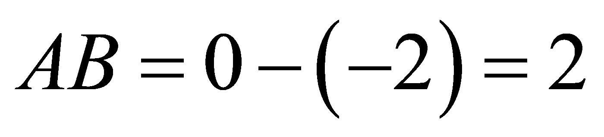
；线段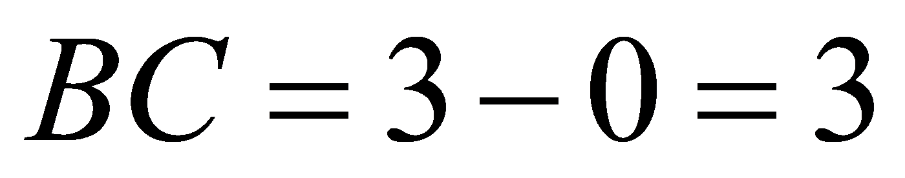
；线段 ．
．
(1)若点E、F表示的数分别是 和
和 ，则线段EF的长为________．
，则线段EF的长为________．
(2)点M、N为数轴上的两个动点．点N在点M的右边，点M表示的数是 ，若线段MN的长为
，若线段MN的长为 ，则点N表示的数是________．
，则点N表示的数是________．
(3)点P，Q为数轴上的两个动点，动点P从点A出发，以每秒2个单位长度的速度沿A—C—A运动．动点Q从点C出发，以每秒1个单位长度的速度沿数轴向终点A运动．设点P、Q的运动时间为t（ ）秒．
）秒．
①当点P沿A—C运动时，求点P、Q相遇时t的值．
②当点B将线段PQ分成的两部分的比为 时，直接写出t的值．
时，直接写出t的值．